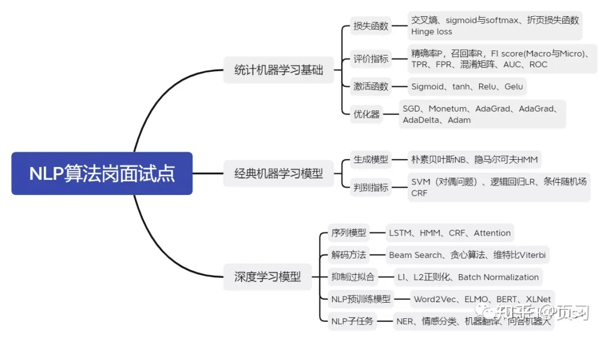
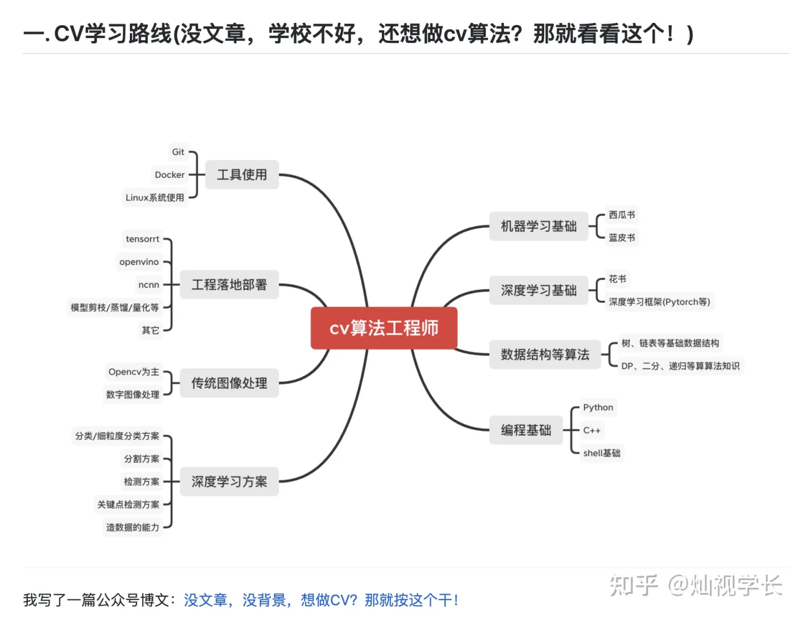

Machine Learning Engineer (Ads) Interview Questions
A Guide to Pass the MLE interview.
 
1 数学
阿米巴虫波波生0个、1个或2个小阿米巴虫的概率分别是25%、25%以及50%。这些小阿米巴虫们的繁殖能力也都一样。请问波波的后代灭绝的概率是多少？
任何15分钟时间段内，你看到至少一颗流星的概率是20%。请问在一小时内你看到至少一颗流星的概率是多少？
仅使用一枚色子，你如何生成一个1-7内随机数？
有一个数据集包含来自两个正态分布的数值。两个分布的标准差相同。来自两个分布的数据点个数相同。请问如果想要该数据集呈双峰分布，两个分布的均值应当至少差多少？
一对夫妻告诉你他们有两个小孩，其中至少有一个是女孩。请问他们拥有两个女儿的概率是多少？
提供已知正态分布的样本值，请问你能如何模拟一个均匀分布的样本值？
2 SQL
3 计算机基础
3.1 操作系统
- 用户态，内核态
3.2 计算机网络
- tcp解包的过程
- 3次握手，4次挥手
4 机器学习
4.1 模型
- 手推LR（求导、梯度更新），FM，SVM（原形式、对偶形式），Adaboost，GBDT，XGBoost
4.2 评估指标
- F1-score，AUC，交叉熵；AUC和交叉熵在分类上的区别与联系；手推AUC
5 深度学习
5.1 模型
- ResNet
- fm，ffm，deepfm，dcn，xdeepfm
5.2 手撕xx
反向传播
Pytorch实现简单DNN训练过程（net、loss、optim、zero_grad、backward、step）
5.3 优化器
- 你一般用什么优化器？SGD, Momentum, Adagrad, Rmsprop, Adam原理，分别解决了什么问题？Adagrad和Rmsprop是如何对学习率做约束的？
5.4 常见问题
过拟合
激活函数
sigmoid、softmax、tanh、relu、leaky relu
sigmoid只做值非线性变化映射到(0,1)，用于二分类。 softMax变化过程计算所有结果的权重，使得多值输出的概率和为1。用于多分类。 指数运算速度慢。梯度饱和消失。 tanh函数 双曲正切函数。以0为中心，有归一化的作用。 ReLu和Leaky ReLu 大于0为1，小于0为0，计算速度快。 leaky输入为负时，梯度仍有值，避免死掉。
样本不平衡
欠采样：随机欠采样、easysampling、KNN 过采样：随机过采样、SMOTE（人工合成） 数据增强 代价敏感学习：误分类代价不同 适合的评价指标：准确率、F1值、AUC、G-Mean
距离衡量与相似度
欧几里得距离、马哈拉诺比斯距离、曼哈顿距离、切比雪夫距离、明可夫斯基距离、海明距离、编辑距离 余弦相似度、皮尔森相关系数、Jaccard相似系数、Tanimoto系数、对数似然相似度/对数似然相似率、互信息/信息增益，相对熵/KL散度、信息检索–词频-逆文档频率（TF-IDF）、词对相似度–点间互信息
特征选择的方法
目的：简化模型，降低过拟合，减少内存和计算开销，增强泛化 过滤方法： 覆盖率、皮尔逊相关系数、Fisher、最大方差阈值、卡方检验 封装方法： 完全搜索、启发式搜索（随机森林，KNN，SVM） 嵌入方法： 正则化项（L1）、输出模型特征重要性
决策树剪枝
预剪枝：提前结束决策树的增长：类目数量、方差 性能提升 后剪枝：决策树生长完成之后再进行剪枝
常见的数据分箱方法
等距离（宽） 等频率（深） 卡方分箱（有监督）
处理海量数据方法
HAsh法：hash映射，hash统计+堆/归并/快速排序 双层桶法：重找中位数（划分数据、统计个数） Bit-map：为每个数分配bit,遍历改变状态 Trie树、数据库 外排序 map-reduce
Kmean缺陷与改进
确定K值：可视化观测，试算K：BIC、AIC，平均质心距离 启发迭代：选取质心，计算距离，标注样本，计算质心，迭代计算距离…… 缺点：K值选取，非凸不收敛、异常点敏感 改进：离群点检测、自动选取K值
随机森林
常见调参： n_estimators:森林中决策树的个数，默认是10 criterion：度量分裂质量，信息熵或者基尼指数 max_features：特征数达到多大时进行分割 max_depth:树的最大深度 min_samples_split:分割内部节点所需的最少样本数量 bootstrap:是否采用有放回式的抽样方式 min_impurity_split：树增长停止的阀值
XGBoost
- 特征重要性的评估：损失函数在特征分裂前后的平均增益
- XGB的分裂准则：损失函数增益最大化
- XGB常用调参： n_estimators:迭代次数，子树的数量 max_depth、min_child_weigh：树深，孩子节点最小样本权重和 gamma、alpha、lambda：后剪枝比例，L1，L2正则化系数 subsample、colsample_bytree：样本采样、列采样 eta:削减已学树的影响，为后面学习腾空间 tree_method：gpu_histGPU 加速
LightGBM
- 常用调参： num_iterations、learning_rate：迭代次数，学习率 max_depth、min_data_in_leaf、num_leaves：控制树的大小 lambda_l1、lambda_l2、min_split_gain：L1、L2、最小切分 feature_fraction、bagging_fraction：随机采样特征和数据 device：GPU
GBDT、XGB、LGB比较
XGB比GBDT新增内容： 1.损失函数：加入正则化项：L1叶子节点数，L2叶子节点输出Score 2.导数：使用代价函数的二阶展开式来近似表达残差 3.基分类器：XGB支持线性分类器做基分类器 4.处理缺失值：寻找分割点时不考虑缺失值。分别计算缺失值在左右的增益。测试首出现缺失，默认在右。 5.近似直方图算法：采用加权分位数法来搜索近似最优分裂点 6.Shrinkage(缩减）：将学习到的模型*系数，削减已学模型的权重 7.列采样：特征采样。 8.并行计算：特征预排序，特征分裂增益计算（均在特征粒度上） LGB比XGB新增内容（GBDT+GOSS+EFB）： 1.节点分裂准则：XGB一次分裂一层节点（浪费），LGB深度优先分裂（过拟合） 2.决策树算法：基于histogram直方图分箱操作。减存加速 3.直接支持类别特征，无需独热操作 4.特征并行，数据并行 5.GOSS：单边采样：保留大梯度样本，随机采样小梯度样本 6EFB：归并很少出现的特征为同一类
Stacking和Blending
LDA、PCA与SVD
线性判别分析 Linear Discriminate Analysis（监督） PCA用于方阵矩阵分解 SVD用于一般矩阵分解 - LDA（类别区分最大化方向投影） 在标签监督下，进行类似PCA的主成分分析 构造类间的散布矩阵 SB 以及 类内散布矩阵 SW - PCA（方差最大化方向投影） 构建协方差矩阵 最大化投影方差：信号具有较大方差，让数据在主轴方向投影方差最大 最小平方误差：方差最大，即样本点到直线距离最小（最小平方误差） - SVD 左右为正交矩阵：用于压缩行、列 中间为对角阵：奇异值
SVM
为什么要转化成对偶形式 方便核函数的引入（转化后为支持向量内积计算，核函数可以在低纬中计算高维的内积），改变复杂度（求W变成求a（支持向量数量）） SVM的超参：C和gamma，C正则系数，gamma决定支持向量的数量 SVM的核函数 有效性：核函数矩阵KK是对称半正定矩阵 常见核函数：线性核函数，多项式核函数，高斯核函数，指数核函数 区别：线性简单，可解释性强，只用于线性可分问题。多项式可解决非线性，参数太多。高斯只需要一个参数，计算慢，容易过拟合。 选择方式 特征维数高选择线性核 样本数量可观、特征少选择高斯核（非线性核） 样本数量非常多选择线性核（避免造成庞大的计算量）
EM
用于含有隐变量的概率模型参数的极大似然估计
6 手撕代码
- 判断一个字符串是否是另一个字符串的子字符串(KMP算法)
- 冒泡排序(必须用C++)
- leetcode221，最大正方形
- 两个字符串，找到第二个字符串在第一个字符串中的下标，没有反回-1
7 业务题
1.对于一个广告驱动的消费者产品（比如Buzzfeed，YouTube，Google搜索等），什么可以称为好的成功衡量指标？服务驱动的消费者产品（比如优步，Flickr，Venmo等）呢？
广告驱动：页面浏览量与每日活跃量，点击率，每次点击成本 服务驱动：购买量，转化率
2.对于一个效率工具（比如印象笔记，Asana，Google文档等），什么可以称为好的成功衡量指标？线上课程平台（比如edX，Coursera，Udacity等）呢？
效率工具：付费订阅用户数 线上课程平台：付费订阅用户数，课程完成率
3.对于一个电商产品（比如Etsy，Groupon，Birchbox等），什么可以称为好的成功衡量指标？订阅产品（比如Netflix，Birchbox，Hulu等）呢？高级付费订阅（比如OKCupid，领英，Spotify等）呢？
电商产品：购买量，转化率，时/日/周/月/季/年销售额，售出产品成本，存货量，网站流量，净回头客量，客服电话量，平均解决问题时长 订阅产品：流失量，（不知道接下来这几个都是啥） 高级付费订阅：（无解答）
4.对于高度依赖于用户投入与交互的消费者产品（比如Snapchat，Pinterest，Facebook等），什么可以称为好的成功衡量指标？通讯产品（比如GroupMe，Hangouts，Snapchat等）呢？
高度依赖于用户投入与交互的消费者产品：user AU ratios，分类型邮件汇总，分类型推送通知汇总，复活率。 通讯产品：（无解答）
5.对于拥有app内购服务的产品（比如Zynga，愤怒的小鸟以及许多其他游戏），什么可以称为好的成功衡量指标？
用户/付费用户平均营收
你自己对哪方面的业务感兴趣？有没有自学相关知识？
如何判断或者预测，食堂的就餐人数。
8 项目细节
9 个人品质
- 自我介绍
- 每天的时间分配，最近读的论文
- 自己遇到的最大困难，最自豪的事
- 讲一个最出色的项目
- 数学建模中的分工，遇到的矛盾，怎么协调
- 用三个词描述自己，优缺点
- 为什么选择OPPO，自己心目中各大公司的地位
- 选择工作的三个因素
- 介绍一下你所热爱的事情
- 介绍一下与你面试岗位相关的概念
- 你会如何向没有统计背景的工程师解释A/B测试，线性回归呢？
- 你会如何向没有统计背景的工程师解释置信区间以及95％的置信度的意思？
- 你会如何向一组高级管理人员解释为什么数据很重要？